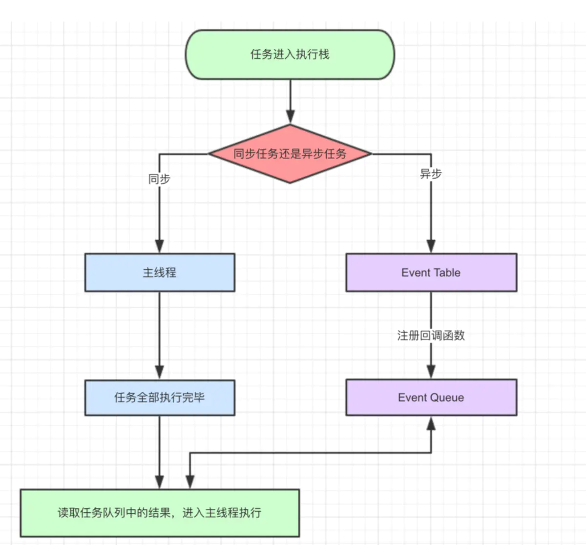
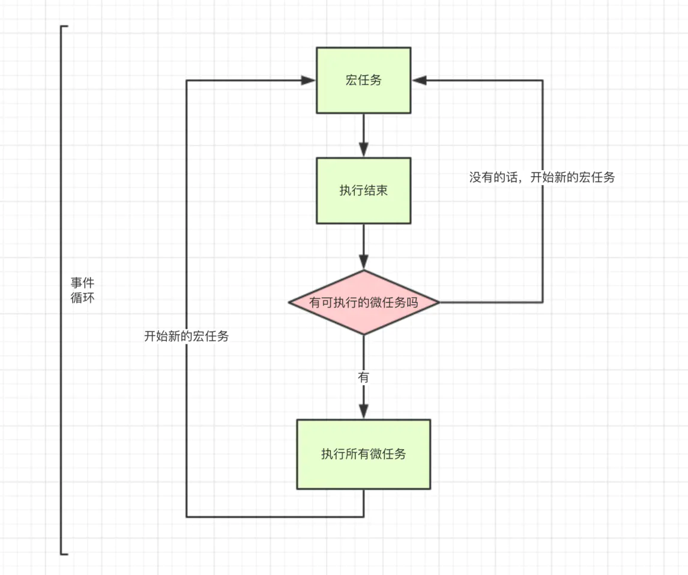

JS事件循环
为什么js是单线程？
JavaScript 的单线程，与它的用途有关。作为浏览器脚本语言，JavaScript 的主要用途是与用户互动，以及操作 DOM。这决定了它只能是单线程，否则会带来很复杂的同步问题。比如，假定JavaScript 同时有两个线程，一个线程在某个 DOM 节点上添加内容，另一个线程删除了这个节点，这时浏览器应该以哪个线程为准？
所以，为了避免复杂性，从一诞生，JavaScript 就是单线程，这已经成了这门语言的核心特征，将来也不会改变。
为什么要有事件循环？
因为Javascript在浏览器中是单线程，所以在进行一个延时操作时并不能真的就让进程在原地等待那么久，那样用户的相关操作就“卡死”在哪里了，所以引入了事件循环的机制来，将需要消耗时间的操作“跳过去”，等主线程的操作完成了，再检查任务队列中是否还有任务，然后将任务调出来执行。就这样反复循环执行，所以就叫做事件循环。

导图表达的内容：
- 同步和异步任务分别进入不同的执行”场所”，同步的进入主线程，异步的进入Event Table并注册函数。
- 当指定的事情完成时，Event Table会将这个函数移入Event Queue。
- 主线程内的任务执行完毕为空，会去Event Queue读取对应的函数，进入主线程执行。
- 上述过程会不断重复，也就是常说的Event Loop(事件循环)。
怎么知道主线程执行栈为空啊？js引擎存在monitoring process进程，会持续不断的检查主线程执行栈是否为空，一旦为空，就会去Event Queue那里检查是否有等待被调用的函数。
示例：
1 | let data = []; |
上面是一段简易的ajax请求代码：
- ajax进入Event Table，注册回调函数success。
- 执行console.log(‘代码执行结束’)。
- ajax事件完成，回调函数success进入Event Queue。
- 主线程从Event Queue读取回调函数success并执行。
相信通过上面的文字和代码，你已经对js的执行顺序有了初步了解。接下来我们来研究进阶话题：setTimeout。
事件循环中的setTimeout
大家对他的第一印象就是异步可以延时执行，我们经常这么实现延时3秒执行：
1 | setTimeout(() => { |
渐渐的setTimeout用的地方多了，问题也出现了，有时候明明写的延时3秒，实际却5，6秒才执行函数，这又咋回事啊？
先看一个例子：
1 | setTimeout(() => { |
根据前面我们的结论，setTimeout是异步的，应该先执行console.log这个同步任务，所以我们的结论是：
1 | //执行console |
去验证一下，结果正确！
然后我们修改一下前面的代码：
1 | setTimeout(() => { |
乍一看其实差不多嘛，但我们把这段代码在chrome执行一下，却发现控制台执行task()需要的时间远远超过3秒，说好的延时三秒，为啥现在需要这么长时间啊？
这时候我们需要重新理解setTimeout的定义。我们先说上述代码是怎么执行的：
- task()进入Event Table并注册,计时开始。
- 执行sleep函数，很慢，非常慢，计时仍在继续。
- 3秒到了，计时事件timeout完成，task()进入Event Queue，但是sleep也太慢了吧，还没执行完，只好等着。
- sleep终于执行完了，task()终于从Event Queue进入了主线程执行。
上述的流程走完，我们知道setTimeout这个函数，是经过指定时间后，把要执行的任务(本例中为task())加入到Event Queue中，又因为是单线程任务要一个一个执行，如果前面的任务需要的时间太久，那么只能等着，导致真正的延迟时间远远大于3秒。
setTimeout(fn,0)示例
我们还经常遇到 setTimeout(fn,0) 这样的代码，0秒后执行又是什么意思呢？是不是可以立即执行呢？
答案是不会的，setTimeout(fn,0) 的含义是：指定某个任务在主线程最早可得的空闲时间执行，意思就是不用再等多少秒了，只要主线程执行栈内的同步任务全部执行完成，栈为空就马上执行。
举例说明：
1 | console.log('a') |
结果：a d c b
- console.log(‘a’) 和 console.log(‘d’) 进入主线程
- 定时器 setTimeout 延迟一段时间执行，顾名思义异步任务进入Event Queue中，等待主线程任务执行完毕，再进入主线程执行。
有人疑惑为什么c比b先输出？
定时器的延迟时间为 0 并不是立刻执行，只是代表相比于其他定时器更早的进入主线程中执行。即便主线程为空，0毫秒实际上也是达不到的。根据HTML的标准，最低是4毫秒。
如果宏任务里的settimeout延迟时间不一样，优先执行短的，等短的settimeout整个宏任务执行完了才到长的settimeout
因为c的延迟时间比b短，所以更早进入主线程。
事件循环中的setInterval
setTimeout 的孪生兄弟 setInterval。他俩差不多，只不过后者是循环的执行。对于执行顺序来说，setInterval 会每隔指定的时间将注册的函数置入Event Queue，如果前面的任务耗时太久，那么同样需要等待。
唯一需要注意的一点是，对于 setInterval(fn,ms) 来说，我们已经知道 不是 每过ms秒会执行一次fn，而是每过ms秒，会有fn进入 Event Queue 。
一旦 setInterval 的回调函数fn执行时间超过了延迟时间ms，那么就完全看不出来有时间间隔了。
事件循环中的Promise与process.nextTick(callback)
除了广义的同步任务和异步任务，我们对任务有更精细的定义：
- macro-task(宏任务) ：包括整体代码script，setTimeout，setInterval
- micro-task(微任务) ：Promise，process.nextTick
不同类型的任务会进入对应的Event Queue，比如setTimeout和setInterval会进入相同的Event Queue。
事件循环的顺序，决定js代码的执行顺序。进入整体代码(宏任务)后，开始第一次循环。接着执行所有的微任务。然后再次从宏任务开始，找到其中一个任务队列执行完毕，再执行所有的微任务。
示例：
1 | setTimeout(function() { |
- 这段代码作为宏任务，进入主线程。
- 先遇到setTimeout，那么将其回调函数注册后分发到宏任务Event Queue。(注册过程与上同，下文不再描述)
- 接下来遇到了Promise，new Promise立即执行，then函数分发到微任务Event Queue。
- 遇到console.log()，立即执行。
- 好啦，整体代码script作为第一个宏任务执行结束，看看有哪些微任务？我们发现了 then 在微任务 Event Queue 里面，执行。
- ok，第一轮事件循环结束了，我们开始第二轮循环，当然要从宏任务 Event Queue 开始。我们发现了宏任务 Event Queue 中 setTimeout 对应的回调函数，立即执行。
- 结束。
事件循环，宏任务，微任务的关系如图所示：

示例：
分析一段复杂代码验收成果。
1 | console.log('1'); |
第一轮事件循环流程分析如下：
- 整体script作为第一个宏任务进入主线程，遇到console.log，输出1。
- 遇到 setTimeout ，其回调函数被分发到宏任务Event Queue中。我们暂且记为setTimeout1 。
- 遇到 process.nextTick() ，其回调函数被分发到微任务Event Queue中。我们记为process1 。
- 遇到 Promise，new Promise直接执行，输出7。then1被分发到微任务Event Queue中。我们记为then1 。
- 又遇到了 setTimeout ，其回调函数被分发到宏任务Event Queue中，我们记为setTimeout2 。
| 宏任务Event Queue | 微任务Event Queue |
|---|---|
| setTimeout1 | process1 |
| setTimeout2 | then1 |
- 上表是第一轮事件循环宏任务结束时各Event Queue的情况，此时已经输出了1和7。
- 我们发现了 process1 和 then1 两个微任务。
- 执行 process1,输出6。
- 执行 then1，输出8。
第一轮事件循环正式结束，结果是输出1，7，6，8。
第二轮事件循环流程分析如下：
循环从setTimeout1宏任务开始
- 首先输出2。接下来遇到了 process.nextTick() ，同样将其分发到微任务Event Queue中，记为process2 。new Promise 立即执行输出4，then也分发到微任务Event Queue中，记为then2 。
| 宏任务Event Queue | 微任务Event Queue |
|---|---|
| setTimeout2 | process2 |
| then2 |
- 第二轮事件循环宏任务结束，我们发现有process2和then2两个微任务可以执行。
- 输出3。
- 输出5。
- 第二轮事件循环结束，
第二轮输出2，4，3，5。
第三轮事件循环流程分析如下：
此时只剩setTimeout2了，执行。
直接输出9。
将 process.nextTick()分发到微任务Event Queue中。记为process3。
直接执行 new Promise，输出11。
将then分发到微任务Event Queue中，记为then3。
宏任务Event Queue 微任务Event Queue process3 then3 第三轮事件循环宏任务执行结束，执行两个微任务process3和then3。
输出10。
输出12。
第三轮事件循环结束，
第三轮输出9，11，10，12。
整段代码，共进行了三次事件循环，完整的输出为1，7，6，8，2，4，3，5，9，11，10，12。
(请注意，node环境下的事件监听依赖libuv与前端环境不完全相同，输出顺序可能会有误差)
大部分转载作者-ssssyoki的内容，具体可看作者-ssssyoki掘金推文